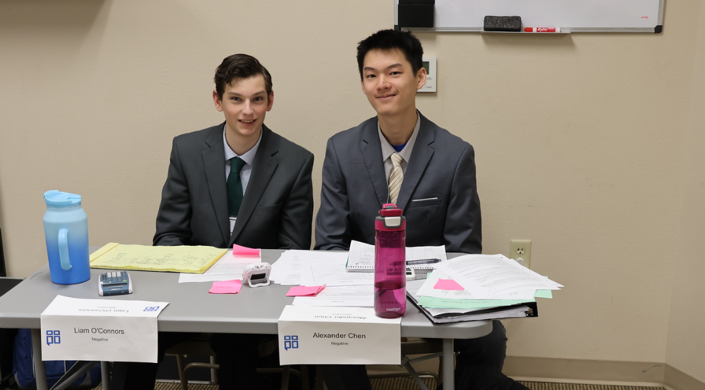

01/22/2025
Last week was amazing in Flint, TX, for our first region qualifier in NCFCA this year.
My partner and I advanced to semifinals, and placed 4th out of the 24 competing team policy teams.
I placed 7th overall Team Policy speaker.
I also placed 11th overall in the Persuasive speech category, and 16th in the Apologetics category;
it was my first time competing in both categories.
This tourney was a great experience, and we're excited to see how the year continues!
